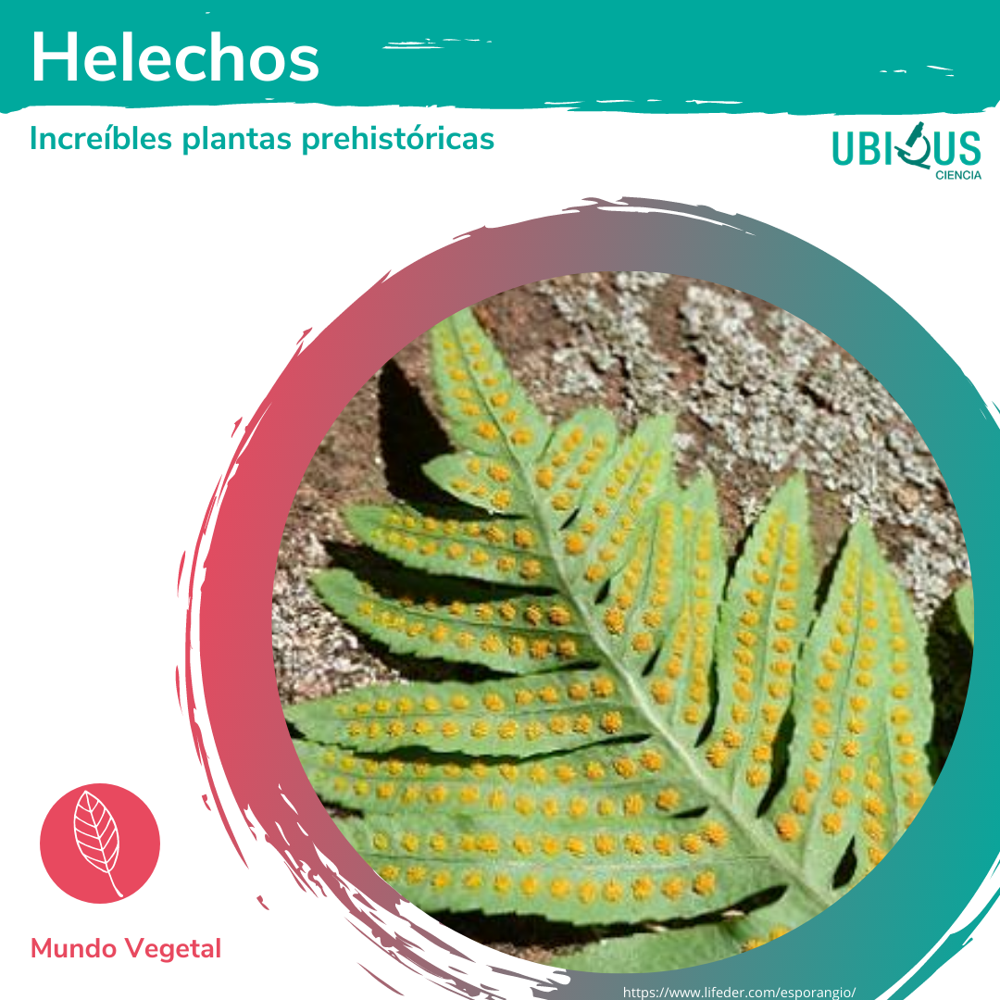

Helechos, Increíbles plantas prehistóricas.
Existen tipos de plantas que llaman mucho la atención por su apariencia ornamental pero también por las condiciones en las que crecen (en general en lugares húmedos y sombríos). Estoy hablando en particular de los helechos, plantas que transmiten frescura y vida por sus diversas formas y tonalidades verdes.